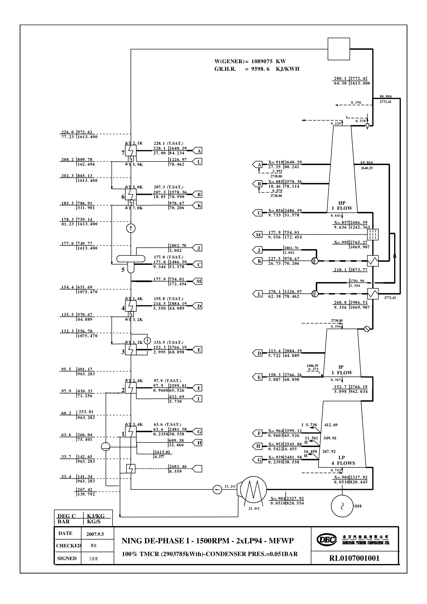

本教程的讲解面板与互动图需要启用 JavaScript 才能显示。
宁德核电 100% TMCR · 跟着蒸汽走一圈
互动教程 · 主图数据取自东汽第 6 页（RL0107001001），VWO 对照取第 12 页升版，关键推导与工程解释另标
导览
给水回热
数字对照
自由探索
速查
暂停流动
蒸汽
抽汽/漏汽
凝结水
给水
疏水
箭头=流向 · 灰点线=海水
粉色框=网页定位层
←
→
100% TMCR · 教学简图
教学简图
第 6 页原图
全页
汽轮机与再热
给水回热
凝汽器与低压缸
显示定位框
适应
主蒸汽 64.3 bar · 280 ℃
1613.4 kg/s · X≈0.995
汽轮机进汽调节阀（调门）
调门
9.6 bar · X=0.857
268.8 ℃ 过热
2986.5 kJ/kg
3.1 bar · 962.0 kg/s
0.051 bar
X=0.904
33.4 ℃ · 963.3 kg/s
最终给水 226.0 ℃
SG 入口 · 77.23 bar
高加疏水 311.9 kg/s → 除氧器
4→3 号经疏水泵汇入主流 · 2→1 号流回凝汽器
海水 21 ℃ →
→ 回大海
蒸汽发生器 ×3
REACTOR / CPR1000 · 2904 MW
高压缸
HP · 1 流
MSR 汽水分离再热器
分离器
一级再热 · 抽汽
177.9→218.1 ℃
二级再热 · 新汽
218.1→268.8 ℃
中压缸
IP · 1 流
低压缸 1
低压缸 2
2×双流 = 四流排汽
GEN
发电机
1089.1 MW
凝汽器
0.051 bar · 33 ℃
凝结水泵
1 低加
60.2 ℃
2 低加
95.5 ℃
3 低加
132.3 ℃
4 低加
154.4 ℃
除氧器 ⑤
177.0 ℃ · ≈9.3 bar
给水泵
6 高加
202.3 ℃
7 高加
226.0 ℃
A 管用户端：7 号高加入口
A
B 管用户端：6 号高加入口
B
C 管用户端：除氧器入口
C
A
B
C
D
E
F
G
M
K
L
J

无法载入
pages/p06-100tmcr.jpg
。请确认原图与 HTML 的相对位置没有改变。
返回教学简图